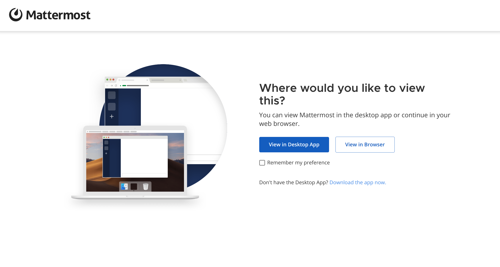
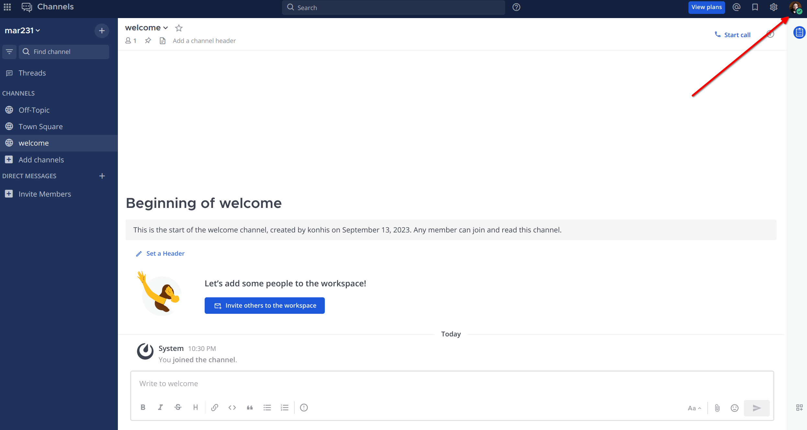
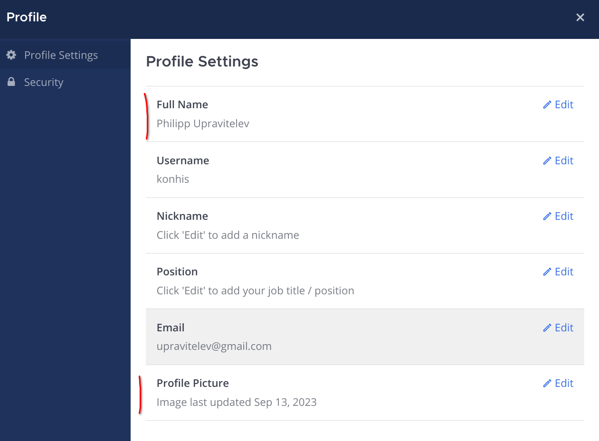

Введение
Data culture
Проект Data Culture направлен на то, чтобы у студентов всех программ бакалавриата Высшей школы экономики появилось понимание возможностей современных технологий в области Data Science.
https://www.hse.ru/dataculture/
Обо мне
продуктовый аналитик в Pixonic
продуктовый аналитик в GameInsight
аналитик в Консультант+
аспирант СПбГУ (когнитивная психология)
Contacts
@konhis в https://mm.upravitelev.info/ (основное средство коммуникации)
upravitelev@gmail.com (дополнительное средство коммуникации)
+7-965-425-5919 (для экстренных случаев)
MM invite link
Все взаимодействие по курсу будем вести в Mattermost (аналог Slack), это мессенджер для команд, очень популярен в IT и среди датасаентистов. https://mm.upravitelev.info/signup_user_complete/?id=cfm9gfrwstg3jfkybb9t65eo6e
Syllabus
Основы синтаксиса R.
Виды источников данных. Импорт данных из разных типов файлов данныx - SPSS, Excel, *.csv и прочих.
Методы сбора удаленных данных. Скрапинг полуструктурированных сайтов. Изучим XPath и как извлекать данные из html-кода страницы сайтов. Попутно научимся писать циклы и функции.
Удаленные базы данных и API: простейшие API — что такое, зачем, как читать документацию. Работа с API VK и погодного сервиса.
Анализ и представление результатов исследования: много времени будем уделять визуализациям.
R intro
Short history
- 1976: S language
- 1991-1993: R language by Ross Ihaka and Robert Gentleman
- 2000: stable beta
- 2011: RStudio
- 2011: Oracle R Enterprise
- 2015: Microsoft bought Revolution R
- 2017: Just-in-time compilations
- 2018: Speed improvements
R ecosystem
- R Foundation https://www.r-project.org/foundation/
- The Comprehensive R Archive Network: https://cran.r-project.org/
- RStudio & Hadley Wickham
- community
R + RStudio
- R: https://cran.r-project.org/ (нужно установить самым первым)
- RStudio: https://www.rstudio.com/products/rstudio/download/ (после установки R)
Альтернативные IDE
- https://colab.research.google.com/#create=true&language=r (создает colab-ноутбук с R-ядром)
- https://posit.cloud/ (онлайн-версия RStudio)
Синтаксис
Структура выражения
result <- sqrt(x = 4)sqrt() - функция. sqrt - название функции, в () указываются аргументы, к которым будет применяться функция с таким названием.
x - обозначение аргумента функции (в разных функциях аргументы могут называться по-разному)
4 - значение, которое мы передаем в аргумент функции (к коротому будет применена функция)
<- - знак присваивания
result - объект, в который мы записываем результат выполнения функции. Название объектов может быть разным (лучше придерживаться style guide при нейминге)
Вывод на печать
Прямое указание:
print(result)## [1] 2Можно просто вызвать сам объект:
result## [1] 2Присваивание
Оператор <- - это оператор присваивания. Если до этого объект не был создан, то таким образом мы создадим объект x, в котором содержится значение 5. Если до этого объект существовал, то ему будет присвоено новое значение.
x <- 5
print(x)## [1] 5Когда значение или результат функции записываем в объект, ничего не печатается.
result <- sqrt(x = 4)Если нет присвоения, а только простой вызов функции, то результат будет напечатан, как если это был какой-то объект.
sqrt(x = 4)## [1] 2Операторы присвоения
<-(основной оператор)=(не рекомендуется, если только очень хочется)->(существует, но использовать крайне не рекомендуется)<<-,->>(надо понимать, когда использовать, встречаются редко, лучше использоватьassign())
Арифметические операторы
В R помимо оператора присвоения есть другие операторы, в частности, арифметические операторы, операторы сравнения или логического выбора. Операторы сравнения или логические операторы обычно используются при необходимости указать какие-то условия для выбора элементов вектора или таблицы, а также в конструкциях if/else.
Сложение:
+Вычитание:
-Умножение:
*Деление:
/Возведение в степень:
^,**Остаток от деления:
%%(5 %% 2 дает 1)Неполное частное деления:
%/%(5 %/% 2 дает 2)
Операторы сравнения
тождество (равенство):
==не равно:
!=больше/меньше или равно:
>=,<=пропущено ли:
is.na()(проверяет, является ли значение пропущенным, NA)
Комментарии и кавычки
#: строка, которая идет после этого знака, считается комментарием и не выполняется. Используется для того, чтобы прокомментировать код или скрыть от выполнения часть кода.'',"": использутся для создания строковых объектов, можно сочетать одной строке, они не взаимозаменяемы``:обратные апострофы, используются в редких случаях, обычно в RMarkdown, инфиксных операторах или кириллических названиях объектов.
Окружение и подсказки
Полезные функции для работы с окружением
При работе с R:
install.packages('pkg')- установить пакетpkgили список пакетов. Делается однократно при настройке Rlibrary('pkg')- подключение установленного пакета - делается при каждом новом запуске сессии, если этот пакет планируется использоватьgetwd()- узнать адрес рабочей папкиsetwd()- никогда не использовать! Это мешает при работе с несколькими коллегами, может вызвать сбои при каких-то изменениях в структуре папок, да и в целом дурной тон. Лучше использовать проекты в RStudio, которые формируют отдельную папку под каждый проект.ls()- возвращает список созданных объектов рабочего окруженияrm()- удалить какой-нибудь объектrm(list = ls())- удалить все объекты рабочего окружения. Использовать только в консоли, никогда не использовать в скриптах, которые могут быть использованы другими людьми.
help
help(),?(например,?round)или??. Проще всего выделить функцию и нажать F1 на клавиатуре.cheatsheets: https://www.rstudio.com/resources/cheatsheets/
google it!
stackoverflow
Дополнительные материалы
- textbook.rintro.ru – мой учебник по основам R
- Курсы на data.camp. Они, как и все онлайн-курсы, несколько дробные и избыточные, но базам конструкций научить могут.
- На русском языке есть курс на степике. Вполне нормальный, особенно в первых частях.
- Еще есть курс Тони Антонова, он посложнее, но в чем-то получше и поосновательнее курса Карпова и Иванчея.
- Мороз Г. А. , Поздняков И. С. - Наука о данных в R для программы Цифровых гуманитарных исследований
- Селезнёв А. - Язык R для пользователей Excel
- Long J., Teetor P. - R cookbook
- Bryan J. - STAT 545 Data wrangling, exploration, and analysis with R
- Почему не надо использовать setwd()
Домашнее задание
Организационное / MM
Вся коммуникация по курсу будет идти в mattermost. Для того, чтобы войти, перейдите по ссылке: https://mm.upravitelev.info/signup_user_complete/?id=cfm9gfrwstg3jfkybb9t65eo6e
Вам предложат, какую версию вы хотите, веб-версию (в браузере) или мобильное приложение. Я лично использую обе, веб как основная.

После этого вам предложат форму регистрации, в которой надо будет указать имя (фио или username как в телеграме, я предпочитаю указывать его), email (на него приходят уведомления о непрочитанных сообщения) и пароль.
После этого вы окажетесь в основном окне мессенджера. По умолчанию это будет канал Town Square.
Вверху справа расположена кнопка редактирования профиля (картинка с первыми буквами имени).

Отредактируйте профиль: необходимо указать имя и фамилию (латиницей, в виде Name Family name), по возможности поставьте свою фотографию на аватарку.

Слева расположен список каналов и пользователей. Вверху слева есть форма поиска каналов, найдите канал welcome и зайдите в него.

В канале welcome напишите несколько слов о себе: тему своей магистерской (если уже известна), какой опыт работы с R и вообще языками программирования, какие ожидания от курса.
R
Установка R и RStudio
- установите язык R (https://cran.r-project.org/)
- установите Rstudio (RStudio: https://www.rstudio.com/products/rstudio/download/)
Или воспользуйтесь онлайн-вариантами (Colab / Posit Cloud)
RStudio
Если используете RStudio (или VS Code / Pycharm / Posit Cloud) – создайте новый проект. При желании – изучите глобальные настройки и настройки проекта в меню Tools.
Создайте папку practice. В ней предлагаю хранить скрипты с домашками. В дальнейшем появятся папки seminars, data, lib и другие. Если чувствуете в себе силы, создайте папку practice с помощью кода (надо погуглить соответствующую функцию).
Тем, кто использует Jupyter Notebook / Jupyter Lab рекомендую создать отдельную папку по курсу и в ней также создать папку practice.
Операторы и создание векторов
Задание необязательное, но настоятельно рекомендую прорешать всем, кто ни разу не сталкивался с R или давно все забыл и не уверен в своих знаниях. Если решение какого-то задания вызвало у вас сомнения, напишите мне об этом в личке в mm.
При работе используйте гайд по стилю оформления кода.
Старайтесь, чтобы код был максимально простым. Если каждое упражнение занимает больше одной-двух строк — скорее всего вы что-то делаете не так.
В проекте создайте новый скрипт, назовите его 2023-09-12.R (RStudio предлагает назвать файл при сохранении, а расширение предлагает по умолчанию) в папке practice. Новый скрипт можно создать в меню File > New script, кнопкой вверху слева, комбинацией ctrl+shift+n. Или же в панели внизу справа, где перечислены файлы проекта.
Дальнейшие задачи выполняйте в этом скрипте.
Создайте объект
xсо значением 5. Создайте объектy, который равен3 * x. Выведите его на печать.Проверьте, что значение выражения
x - yне равно 84.Запишите в объект
alarmрезультат сравнения, больше лиxчемy. Выведите объект на печать.Симулируйте выпадение какой-либо грани двенадцатигранного кубика (одно значение). Вам потребуется функция
sample().Симулируйте выпадение десяти бросков восьмигранного кубика. Задача решается также с помощью функции
sample().Найдите длину меньшего катета прямоугольного треугольника с катетом длиной 4 и гипотенузой длиной 8, и округлите длину до третьего знака. Вам потребуются оператор возведения в степень и функции
sqrt()иround(). На всякий случай напомню, квадрат гипотенузы равен сумме квадратов катетов.